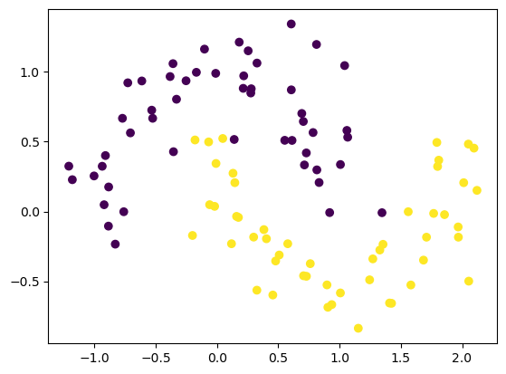
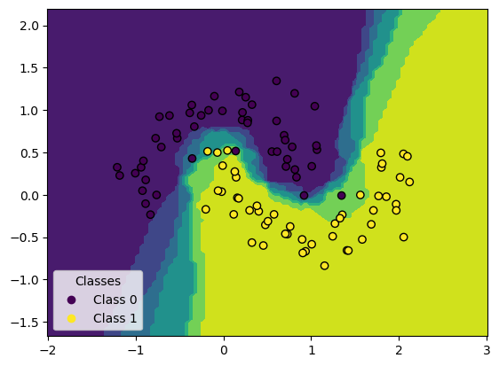

import sklearn.datasets
import matplotlib.pyplot as plt
from sklearn.neighbors import KNeighborsClassifier
from sklearn.model_selection import train_test_split
For this we will load the moon data and apply an KNN Algorithm
X,y = sklearn.datasets.make_moons(n_samples=100,noise=0.2,random_state=0)
plt.scatter(x=X[:,0],y=X[:,1],c=y)
plt.show()

X_train, X_test, y_train, y_test = train_test_split(X,y,random_state=0)
model = KNeighborsClassifier(n_neighbors=5)
model.fit(X_train,y_train)
KNeighborsClassifier()In a Jupyter environment, please rerun this cell to show the HTML representation or trust the notebook.
KNeighborsClassifier()
from sklearn.inspection import DecisionBoundaryDisplay
disp = DecisionBoundaryDisplay.from_estimator(estimator=model, X=X_test)
scatter = disp.ax_.scatter(X[:, 0], X[:, 1], c=y, edgecolors="k")
disp.ax_.legend(
scatter.legend_elements()[0],
["Class 0", "Class 1"],
loc="lower left",
title="Classes",
)
plt.show()
